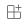
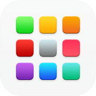

R4/8/17 AM0:28最終更新
iPad・iPhone
1.
Safariで このURLを入力し開きます
右のアイコンでQRコードを表示します
あんしんフィルターで制限していると、使用できません
2.
共有アイコン(ios_share)
右のアイコンでQRコードを表示します
3.
ホーム画面に追加(add_box)
4.
名前を変更(add_box)
初期値では、「中3数学練習プリント」です
5.
ホーム画面を確認すると 追加されています
もし追加されていなかったら、"Appライブラリ"を見てみてください
Android
1.
Google Chromeで このURLを入力し開きます
右のアイコンでQRコードを表示します
あんしんフィルターで制限していると、使用できません
2.
下部に表示される「ホーム画面に 中3数学プリント を追加」
3.
ホーム画面に追加されています
もし表示されない場合は、ランチャーの設定を確認します
PC
対象: Windows 7以降，macOS 10.12以降，Debian/UbuntuまたはFedora/openSUSE，Chromebook，Chrome OS，Chrome OS Flex
0.
Google ChromeまたはMicrosoft Edge(Chromium)を用意します
1.
ChromeまたはEdgeで aoy190420.github.io/mat-ins にアクセスします
右のアイコンでQRコードを表示します
2.
アドレスバーにinstall_desktopまたはが表示されます
3.
次のように表示されたら"インストール"します
4.
やなどからアプリを探し開きます
QRコード
または，aoy190420.github.io/mat-ins